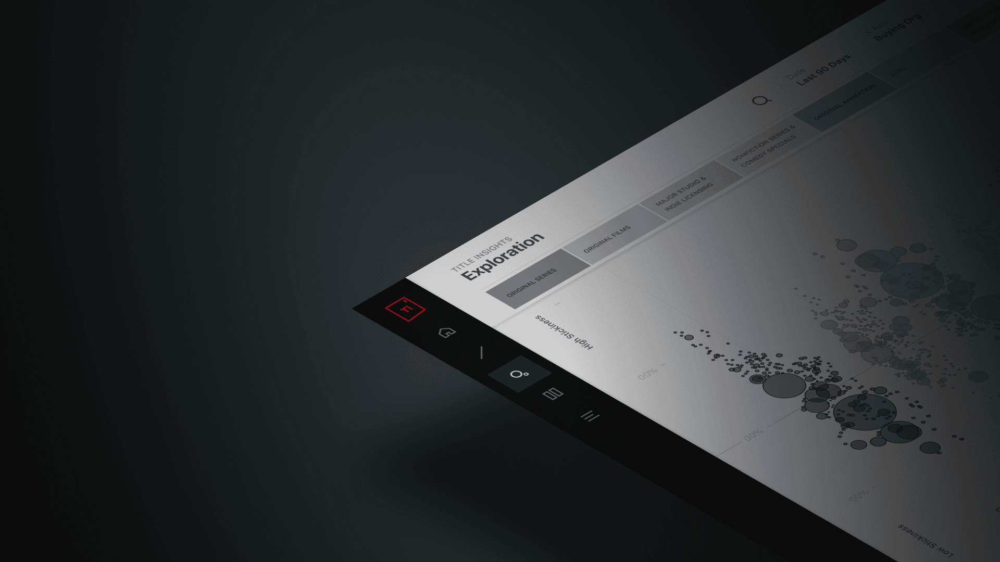
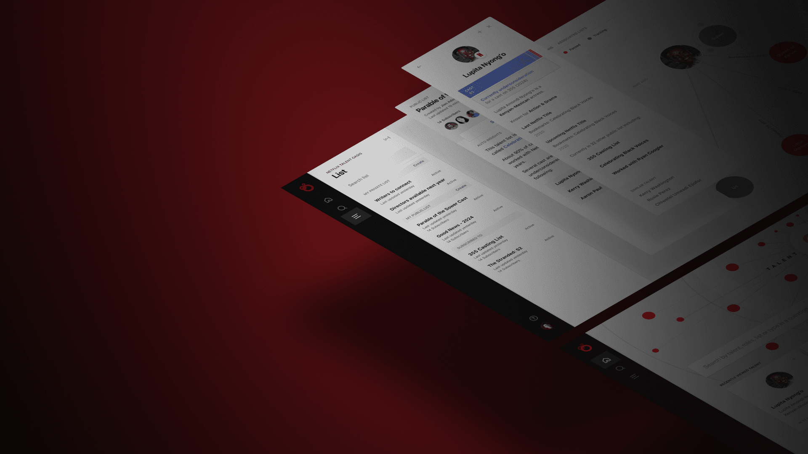
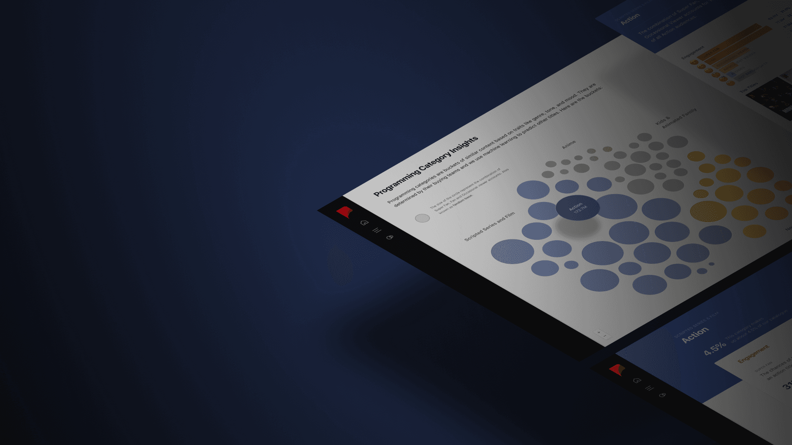

Netflix Data Science
Netflix Data Science team empower innovation and success by delivering actionable insights that shape strategic decisions across every title in our portfolio. Through advanced data tools and products, we enable teams to unlock key insights at each stage of a title’s journey, fueling creativity and growth.
I lead efforts to create a scalable, user-friendly data environment that democratizes access to insights across the organization. My mission is to transform complex data into intuitive, actionable intelligence, giving everyone the ability to harness its power and make a lasting impact. Through designs, I help Netflix teams make smarter decisions, empowering teams to shape the future of entertainment.

Title Insights
Gain actionable insights through performance visualizations with predictive analytics and cost efficiencies, enabling teams to optimize strategies and drive success.

Talent Insights
Explore Netflix-specific data on cast, directors, writers, and key production personnel, helping teams make informed decisions that optimize talent selection and maximize project impact.
Creative Asset Insights
Track the performance of title boxarts and trailer personalizations, offering insights to enhance audience engagement and fine-tune creative assets for maximum impact.

Programming Category Insights
Discover audience preferences and trends across genres with an intuitive dashboard, empowering teams to tailor content strategies and boost engagement.